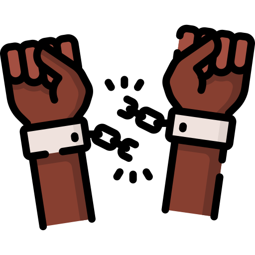

Lo primero que hay que considerar es el origen de los conflictos que se encuentra en la condición vulnerable de la humanidad. La vulnerabilidad humana requiere de un amplio repertorio de satisfactores que responden a un amplio repertorio de necesidades. La primera causa del conflicto consiste en tener necesidades diferentes con frecuencia incompatibles, por ejemplo, alguien siente mucho calor y necesita
encender el aire acondicionado porque siente mucho calor, pero junto a él hay otro al que le hace daño. Y, junto con esto, la desproporción entre las necesidades de las personas o grupos y los satisfactores disponibles, por ejemplo, tres personas tienen necesidad de un auto y sólo hay un auto disponible. Estos ejemplos que hemos presentado son muy banales. Pensemos cuando las necesidades son mucho mayores y más importantes no solamente para las personas sino para las sociedades y son diferentes necesidades. (Aquí se puede dejar un momento para preguntar si alguien tiene la experiencia de un conflicto por situaciones similares).
Otro aspecto que hay que considerar son los límites mentales propios del ser humano. Es decir, la mente humana tiene una estructura y ur funcionamiento limitado, y esto hace que las percepciones generalmente sean pobres y cargadas de interpretaciones subjetivas. Esto significa que nuestra mente, por muy grandiosa que sea, no es capaz de captar la realidad en su totalidad, solamente puede percibir algunos aspectos de la realidad por eso se dice que es pobre la percepción. Y es subjetiva porque en la mayoría de las veces lo que percibimos de la realidad tiene que ver con lo que queremos percibir y no lo que la realidad es, por ejemplo si veo un partido de fútbol en donde mi equipo favorito va perdiendo y el otro equipo está jugando mejor que el equipo al que yo le voy pues entonces, talvez, comenzaré a fijarme solamente en los errores que comete el otro equipo y los engrandeceré, percibiré faltas en donde no las hay o pediré al árbitro que señale un penal cuando éste no existe, por eso decimos que la percepción tambien está cargada de una interpretación subjetiva.
Lo primero que hay que considerar es el origen de los conflictos que se encuentra en la condición vulnerable de la humanidad. La vulnerabilidad humana requiere de un amplio repertorio de satisfactores que responden a un amplio repertorio de necesidades. La primera causa del conflicto consiste en tener necesidades diferentes con frecuencia incompatibles, por ejemplo, alguien siente mucho calor y necesita
encender el aire acondicionado porque siente mucho calor, pero junto a él hay otro al que le hace daño. Y, junto con esto, la desproporción entre las necesidades de las personas o grupos y los satisfactores disponibles, por ejemplo, tres personas tienen necesidad de un auto y sólo hay un auto disponible. Estos ejemplos que hemos presentado son muy banales. Pensemos cuando las necesidades son mucho mayores y más importantes no solamente para las personas sino para las sociedades y son diferentes necesidades. (Aquí se puede dejar un momento para preguntar si alguien tiene la experiencia de un conflicto por situaciones similares).
Otro aspecto que hay que considerar son los límites mentales propios del ser humano. Es decir, la mente humana tiene una estructura y ur funcionamiento limitado, y esto hace que las percepciones generalmente sean pobres y cargadas de interpretaciones subjetivas. Esto significa que nuestra mente, por muy grandiosa que sea, no es capaz de captar la realidad en su totalidad, solamente puede percibir algunos aspectos de la realidad por eso se dice que es pobre la percepción. Y es subjetiva porque en la mayoría de las veces lo que percibimos de la realidad tiene que ver con lo que queremos percibir y no lo que la realidad es, por ejemplo si veo un partido de fútbol en donde mi equipo favorito va perdiendo y el otro equipo está jugando mejor que el equipo al que yo le voy pues entonces, talvez, comenzaré a fijarme solamente en los errores que comete el otro equipo y los engrandeceré, percibiré faltas en donde no las hay o pediré al árbitro que señale un penal cuando éste no existe, por eso decimos que la percepción tambien está cargada de una interpretación subjetiva.
En resumen, no podemos comprender toda la realidad y la realidad la interpretamos de acuerdo con lo que nosotros queremos interpretar. Podemos decirlo con la siguiente frase: “cada quien platica de la feria según cómo le fue en ella”. Y esta realidad hace que muchas veces caigamos en el peligro de hacer una mala interpretación o un mal entendido de algún hecho que luego se convierte en un conflicto.

Un tercer factor de conflictos lo constituye la complejidad de la comunicación interpersonal. Es fácil entender que, en la medida en la que una persona es limitada en sus habilidades para comunicarse, en esa misma medida aumentan sus conflictos con otras personas. Las habilidades para comunicarse suponen la conciencia de que todos los seres humanos estamos condicionados por la subjetividad de la percepción y por una cierta subjetividad en el uso de las palabras. Los buenos comunicadores se preocupan por tratar de tener claro, en la medida de lo posible, cómo perciben los otros, así como también por aclararse y aclarar las palabras. Además, han abandonado algunos modos de relacionarse que generan estrés en sus interlocutores, como, por ejemplo: ordenar, imponer, amenazar, moralizar, sermonear, dar cátedra, juzgar, criticar, condenar, ridiculizar, — avergonzar, — interpretar adivinando, desviar, hacer bromas cínicas o fuera de lugar.

La condición vulnerable y necesitada del ser humano, la subjetividad de la percepción y la complejidad de la comunicación interpersonal, son limitantes propios de la naturaleza humana y, por lo tanto, son retos universales en la resolución de conflictos. Sin embargo, existen ciertas características individuales que acentúan los conflictos y, en ocasiones, impiden una resolución satisfactoria. Las más frecuentes son:
- la postura extrema de “todo o nada”
- las actitudes de dogmatismo y de rigidez que impiden “negociar”
- la costumbre de “etiquetar” a los demás
- polemizar, es decir, luchar para ver quién gana, en lugar de discutir, qué significa “sacudir” para aclarar
- dramatizar los conflictos, es decir, hacer teatro con las dificultades haciéndolas muchas veces más grandes de lo que son en realidad
- dejarse conducir por la propia emotividad hasta perder la objetividad.
Además, muchos conflictos son originados por un conjunto de creencias o actitudes declaradamente enfermizas como por ejemplo:
- el racismo, esto es, la creencia de que determinada raza o cultura es inferior a la propia
- la pretensión narcisista de que las demás personas respondan a las propias expectativas
- la pretensión de igualar o superar a otras personas, actitud que se conoce como envidia. 
- La primera condición para resolver en forma positiva los conflictos es entonces aceptar su existencia como algo normal. Esta aceptación de los conflictos supone también la aceptación de la condición Y humana, con tantas necesidades y limitaciones que generan continuamente conflictos. Por lo tanto, la aceptación del conflicto como algo normal y con frecuencia como algo positivo en cuanto que forja el carácter, estimula el desarrollo y promueve el cambio y el progreso.
- Los seres humanos no sólo somos necesitados, sino también diferentes. La capacidad para resolver favorablemente los conflictos supone también la capacidad para aceptar que los demás son diferentes a uno mismo, con ideas distintas a las nuestras, y por lo ramo quienes son constructivos en las situaciones de conflicto entienden - que - dichas situaciones, en principio, son resultado de estas diferencias individuales, y no de la mala voluntad de los otros.
- la capacidad para resolver en forma positiva los conflictos incluye la "empatía", gracias a la cual la intensión de entender está antes que el intento de defenderse de la Parte con la que no estamos de acuerdo. Supone también la disposición a dialogan asumiendo el riesgo de ser persuadido y, por lo tanto, de ceder y cambiar la propia conducta.
- En todo esto se requiere una dosis de sabiduría aplicada a los siguientes aspectos:
- el enfoque de la solución del conflicto en términos de "ganar-ganar", en lugar de creer que la laca forma para ganar algo es que el otro pierda
- combinar adecuadamente la tolerancia con la firmeza asertiva (escuchar al otro y mantenerse firme en las propias ideas) y la resistencia pasiva no destructiva (aguantarse mutuamente y no querer destruir al otro)
- la capacidad ,a encauzar la agresividad en gestos amables, en modo tal que no se caiga en la represión ni en la explosión violenta.
Finalmente, la capacidad para resolver conflictos implica el desarrollo de las habilidades de «negociación": 0 iniciar sin atacar; 1) escuchar e. empatía con el objetivo de integrar I. aportaciones de todos; ...al di rtfigararsron a) enfatizar los valores comunes; 0 ceder en algo Para fi"«rniiii Pum. intermedio; 6) estar dispuesto a aceptar la opinión de la mayoría: y) habilidad ,a mantener el control de las propias emociones mediante ejercidos de relajación manejo de significados, entro otros,11) En casos especiales recama a la mediación de personas rapetadas por las dos parta en conflicto.